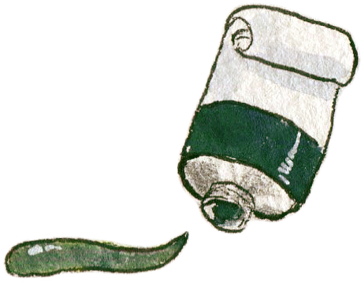
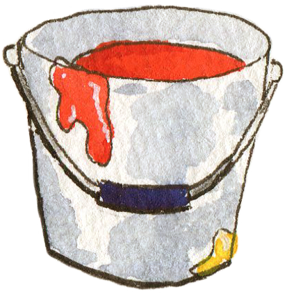
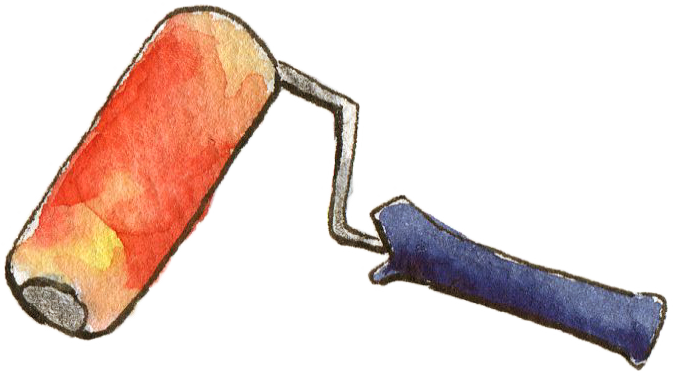
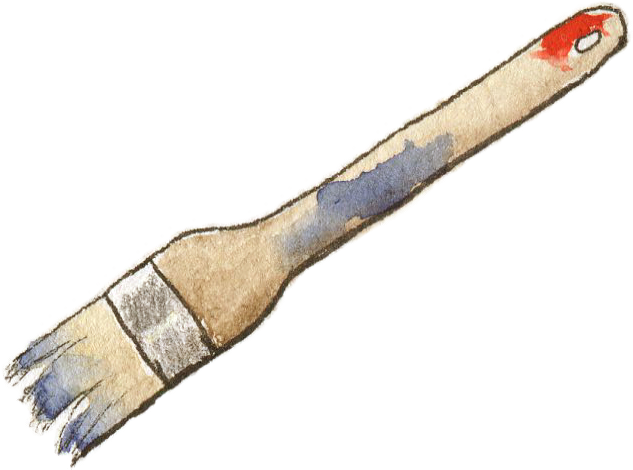

Otto weiß, wie...

...Farben funktionieren!
Was genau ist Farbe
überhaupt?

...optische Täuschungen funktionieren!
Richtig hingeguckt?

...Zeichentrick funktioniert!
Wie geraten Bilder in Bewegung?

...Perspektive funktioniert!
Wie können Zeichnungen zum Anfassen aussehen?
Ein Witz ist nur witzig, wenn einer lacht - außer, Otto hat ihn gemacht!
- Otto, die nicht nur kluge, sondern auch witzige Schnecke